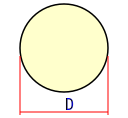

D - диаметр круга
c=d/D

D - диаметр кольца наружный
d - диаметр кольца внутренний
S - толщина стенки
Wp = 2 × Wx
D - диаметр круга
c=d/D
D - диаметр кольца наружный
d - диаметр кольца внутренний
S - толщина стенки
| По логике | |
|---|---|
| F | Внешняя сосредоточенная сила (приложенная в точке) |
| q | Интенсивность распределенной нагрузки, сила на единицу длины (N/m) |
| M | Внешний момент приложенный к детали (изгибающий или крутящий) |
| σ | Нормальное (перпендикулярное площадке) напряжение (сигма σ) |
| [σ] | Допускаемое нормальное напряжение |
| [σ]р | Допускаемое нормальное напряжение при растяжении |
| σт | Предел текучести |
| σв | Предел прочности |
| τ | Касательное (параллельное площадке) напряжение (тау τ) |
| [τ] | Допускаемое касательное напряжение; [τ] ≈ (0,5...0,6)[σ] |
| d | Диаметр круглого стержня |
| b, h | Стороны поперечного сечения прямоугольного стержня |
| t | Толщина стенки трубы |
| A | Площадь поперечного сечения стержня |
| Wx, Wy | Осевые моменты сопротивления сечения (для расчета при изгибе) |
| Wp | Полярный момент сопротивления сечения (для расчета при кручении) |
| Осевые моменты сопротивления Wx | ||
|---|---|---|
| Форма сечения | Расчетная формула | Эскиз и условные обозначения |
| Круг | Wx=Π×D3/32 |  D - диаметр круга |
| Кольцо | Wx=(Π×D3/32)(1-c4) c=d/D |
D - диаметр кольца наружный d - диаметр кольца внутренний S - толщина стенки |
| Полярные моменты сопротивления Wp | ||
| Форма сечения | Расчетная формула | Эскиз и условные обозначения |
| Круг | Wp=Π×D3/16 Wp = 2 × Wx |
D - диаметр круга |
| Кольцо | Wp=(Π×D3/16)(1-c4) c=d/D |
D - диаметр кольца наружный d - диаметр кольца внутренний S - толщина стенки |